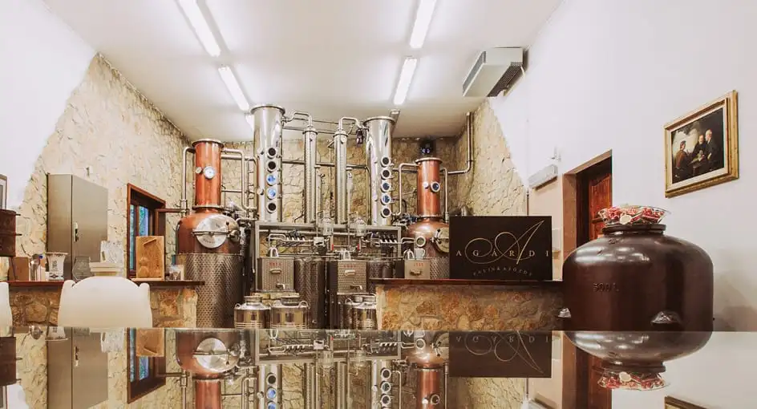

THE HOTEL
About us
Our staff
Parteners
ACCOMODATION
DINING
GALLERY
MEETINGS
OFFERS
CONTACT
Sorry, your browser doesn't support embedded videos.
ANANTARA NEW YORK PALACE BUDAPEST HOTEL
LE GLAMOUR DE L'AGE D'OR
CHAMBRES
CHOISIR SON PARFAIT SANCTUAIRE
ANANTARA expériences
Vos moments les plus mémorables

EXPLORE THE HISTORIC HEART OF BUDAPEST
Anantara New York Palace Budapest Hotel
Erzsébet krt. 9 1073 Budapest
Open Google Map